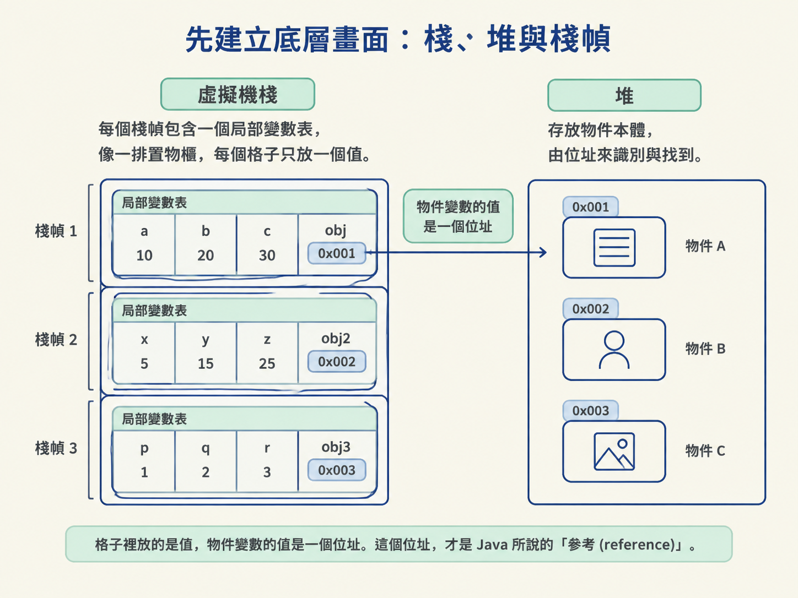
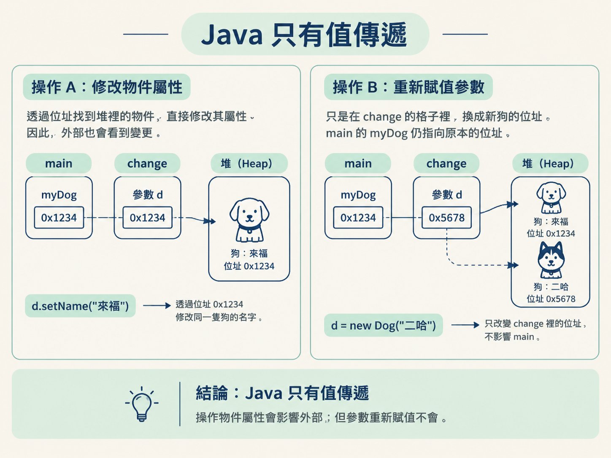
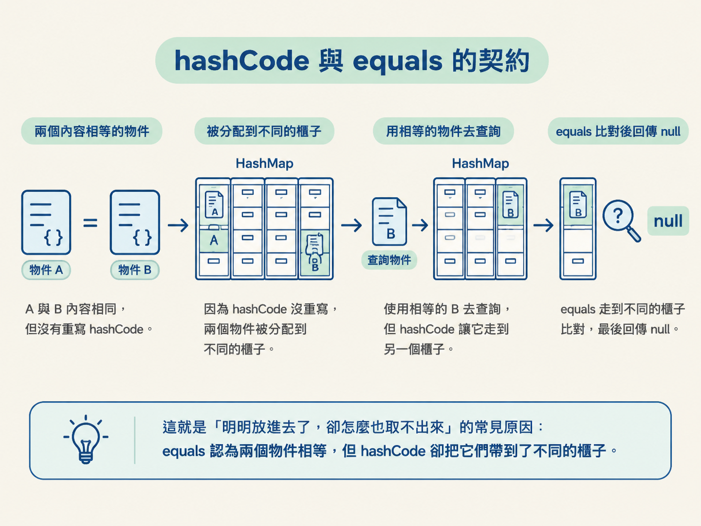
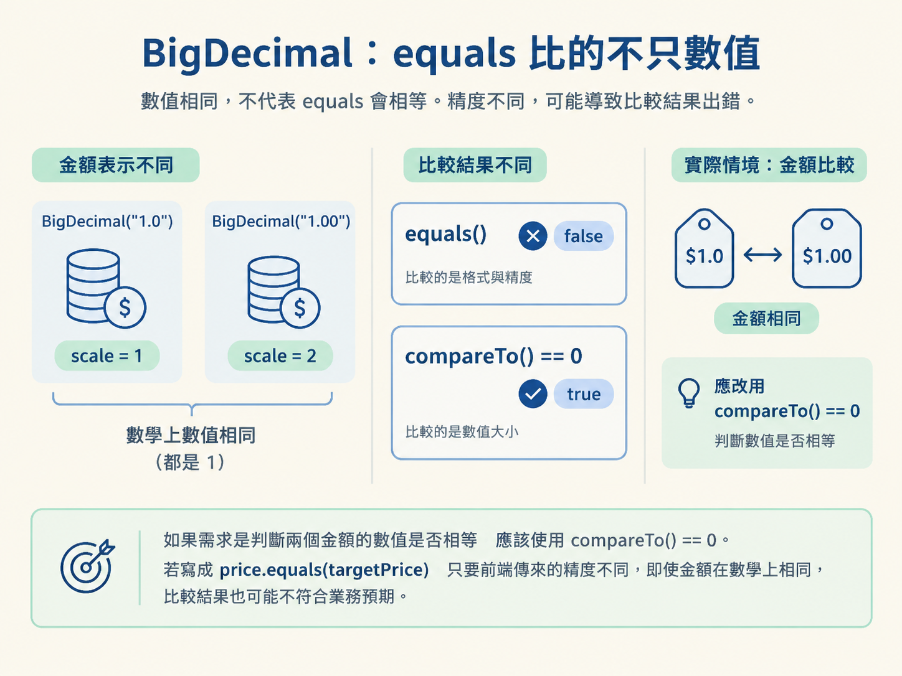

你可能寫過這樣的程式：把一個物件傳進方法，在方法裡修改它的欄位，回到外面一看，物件真的變了。於是你很自然地說：「物件是引用傳遞。」
但換個情境，如果你在方法裡把參數重新 new 成另一個物件，回到外面時，原本的變數卻完全沒變。同一種參數，為什麼一下看起來像引用傳遞，一下又不像？
這不只是 Java 面試常見的題目。當你在寫工具方法、回呼、Map 的 Key，或處理金額比較時，「到底複製了什麼」會直接決定程式是否正確。
這一節會把四個容易混在一起的觀念拆開來看：參數傳遞、== 與 equals、hashCode 與 equals 的契約，以及 BigDecimal 的比較方式。它們其實都繞著同一個問題打轉：兩個東西，到底憑什麼算「一樣」？
看完這一節，你應該能說清楚 Java 為什麼只有值傳遞、== 與 equals 分別比較什麼，也能解釋 hashCode/equals 契約，以及 BigDecimal 比較時容易踩到的坑。
要理解「傳遞」到底發生了什麼，得先知道變數放在哪裡。JVM 的記憶體可以先用兩個區域來理解：堆（Heap）用來放物件本體，虛擬機堆疊（VM Stack）則用來放方法執行時的工作空間。
每當一個方法被呼叫，JVM 就會在堆疊上壓入一個堆疊框架（Stack Frame）。堆疊框架裡有一張局部變數表（Local Variable Table），用來放這個方法的參數與區域變數。
可以把局部變數表想成一排置物櫃。每個格子只放一個值。對物件來說，格子裡放的不是物件本人，而是物件在堆裡的門牌號碼，也就是位址。這個位址，才是 Java 所說的「參考（reference）」。

只要記住「格子裡放的是值，物件變數的值是一個位址」，後面看參數傳遞、== 和 equals，就會容易很多。
Java 的規則其實只有一句：永遠是值傳遞，沒有引用傳遞。
所謂值傳遞，就是把呼叫者格子裡的內容完整複製一份，放進被呼叫方法的格子裡。至於那份內容是數字，還是物件的位址，則是另一回事。
假設有 int a = 10;，接著呼叫 change(a)。JVM 會把 a 格子裡的 10 複製一份，放進 change 的參數格子。
之後 change 裡怎麼修改，改的都是那份複製品，和 main 裡的 10 沒有關係。這種情況很直觀，通常不容易搞混。
換成 Dog myDog = new Dog("旺財"); change(myDog);。myDog 這個格子裡放的，是那隻狗在堆裡的位址。假設這個位址是 0x1234。
呼叫 change 時，Java 仍然照同一套規則處理：複製一份值。只不過這次複製的值不是狗的本體，而是 0x1234 這個位址的值，並把它放進 change 的參數 d 裡。
因此，現在有兩個不同的格子、兩個不同的變數，但兩個格子裡的值相同，都是 0x1234。它們指向堆裡的同一隻狗。
接下來要分清楚兩種完全不同的操作：
d.setName("來福")。這是在拿著 0x1234 找到堆裡的狗，直接把名字改掉。因為 main 裡的 myDog 也指向 0x1234，所以回到外面時，名字確實變了。這個現象很容易讓人誤以為 Java 使用引用傳遞。d = new Dog("二哈")。這只是在 change 的格子裡，把值從 0x1234 換成新狗的位址 0x5678。main 裡的 myDog 完全不受影響，仍然指向 0x1234。這才是值傳遞的鐵證：如果真的是引用傳遞，myDog 也應該變成「二哈」，但它沒有。
面試時可以一路追問到堆疊框架這一層：Java 會把呼叫者局部變數表裡的值複製到被呼叫者的局部變數表。基本型別複製的是數值，參考型別複製的是位址值。之所以能改到外面的物件，是因為兩份位址指向同一個物件；之所以重新賦值改不到外面，是因為你只換掉了自己格子裡的位址。這兩件事合在一起，正好說明 Java 只有值傳遞。
== 與 equals：比較的是不同維度知道「傳了什麼」之後，下一個問題就是「怎麼判斷兩個東西一樣」。Java 提供了 == 和 equals()，但它們比較的維度不同。
== 是運算子。用在基本型別上，它比較的是數值，所以 10 == 10 會得到 true。
用在參考型別上，== 比較的是記憶體位址。只有兩個參考指向堆裡同一個物件時，結果才是 true。可以把它想成兩把鑰匙：必須真的開同一扇門，== 才認為它們相同。即使兩個物件的內容完全一樣，只要位址不同，結果仍然是 false。
equals() 則是 Object 類別定義的方法。如果子類別沒有重寫它，實作本質上就是 ==，同樣比較物件位址。
不過，Java 裡許多常用類別，例如 String 和 Integer，都重寫了 equals()，把比較方式改成比較內容。以 String 為例，只要兩個字串的字元序列完全相同，就會被視為相等，不必是同一個物件。
看最經典的例子：
String a = new String("hello");
String b = new String("hello");
a == b // false：堆裡是兩個不同物件
a.equals(b) // true：String 重寫了 equals，比內容所以面試時不能只回答「== 比位址、equals 比內容」。更完整的說法是：equals 比內容的前提，是該類別重寫了它；如果沒有重寫，equals 和 == 的結果一樣。
hashCode 與 equals 的契約當物件被當成 HashMap 的 Key 時，hashCode() 和 equals() 會一起工作。這裡有兩條重要規則：
a.equals(b) 為 true，那麼 a.hashCode() 必須等於 b.hashCode()。a.hashCode() == b.hashCode()，a.equals(b) 不一定為 true。這種雜湊值相同、但內容不一定相同的情況，叫作雜湊衝突。可以把 HashMap 想成一座大檔案館。hashCode() 先決定物件應該放進第幾號櫃子；找到櫃子後，equals() 再逐一比對裡面的檔案，確認哪一份才是你真正要找的。前者負責快速縮小範圍，後者負責確認是否真的相等。
假設你自訂了 Student 類別，認為「學號一樣就是同一個人」。你重寫了 equals，卻忘了重寫 hashCode，問題就會出現。
Object 預設的 hashCode 是依物件的記憶體位置計算的。因此，兩個學號相同的 new Student(1, "張三")，仍可能得到不同的雜湊值，被放進不同的櫃子。
你把 s1 存進去，再用內容相等的 s2 去取值時，HashMap 可能會前往另一個櫃子尋找，最後只回傳 null。更糟的是，同一個邏輯上的 Key 可能被存成好幾份，白白佔用記憶體。
這就是「明明放進去了，卻怎麼也取不出來」的常見原因：equals 認為兩個物件相等，但 hashCode 卻把它們帶到了不同的櫃子。

BigDecimal：equals 比的不只數值等值比較的陷阱，到了金額場景會更危險。BigDecimal 的 equals 不只比較數值，也會比較精度（scale）。
因此，new BigDecimal("1.0") 和 new BigDecimal("1.00") 在數學上相等，但前者的 scale 是 1，後者的 scale 是 2，使用 equals 比較時會得到 false。
BigDecimal a = new BigDecimal("1.0");
BigDecimal b = new BigDecimal("1.00");
a.equals(b) // false：scale 不同
a.compareTo(b) == 0 // true：只比數學數值如果需求是判斷兩個金額的數值是否相等，應該使用 compareTo() == 0。若寫成 price.equals(targetPrice)，只要前端傳來的精度不同，即使金額在數學上相同，比較結果也可能不符合實際需求。

另外，建立 BigDecimal 時也應該使用字串建構子，避免 double 本身的誤差一起被帶進來。
Java 只有值傳遞：基本型別複製數值，參考型別複製位址值。修改物件屬性會影響外面，是因為兩份位址指向同一個物件；重新賦值不會影響外面，則證明傳遞的是位址值的複製品。==比較基本型別的數值，或參考型別的位址；equals沒有重寫時等同於==，重寫後才可能改成比較內容。物件當作 Key 使用時，equals為true就必須讓hashCode相等；金額比較則應使用BigDecimal.compareTo() == 0。
這幾個觀念可以放在同一張圖裡理解：先看參數傳遞複製的是什麼，再看兩個參考是否指向同一個物件，接著判斷類別是否把「相等」重新定義成內容相等。當物件進入 HashMap，這個相等定義還必須和 hashCode 配合；當資料是金額時，則要特別留意 BigDecimal 對 scale 的處理。
下一節會從「物件如何被建立與複製」繼續往前，討論不可變設計、String 常數池與包裝類，也會回答一個常見問題：為什麼兩個內容相同的字串，== 有時是 true，有時卻是 false？